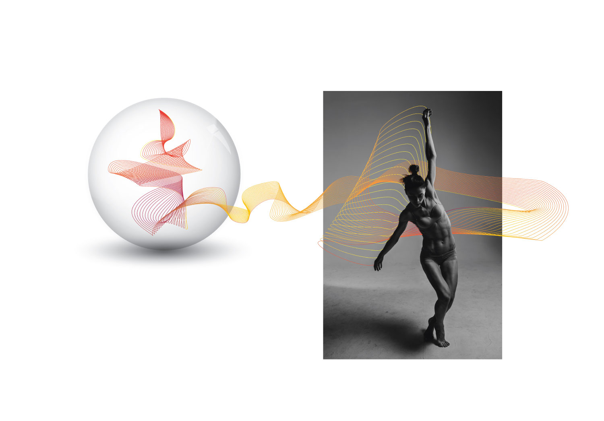
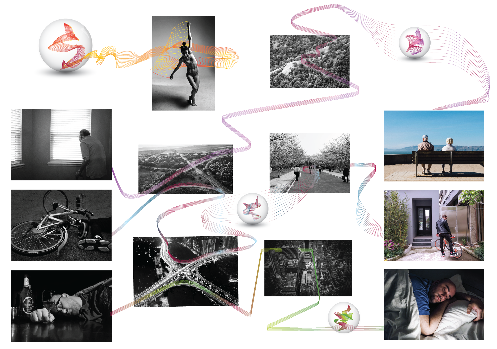
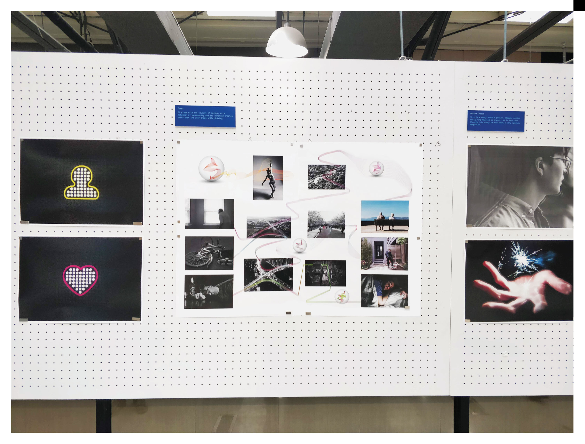
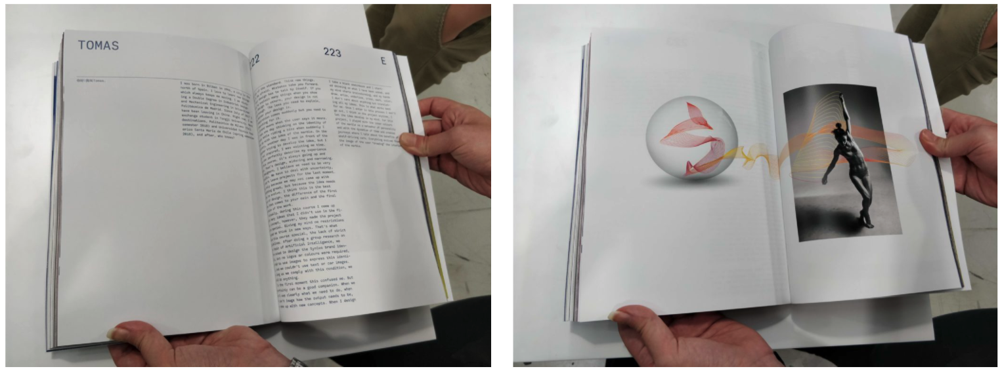
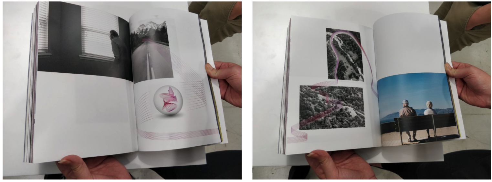
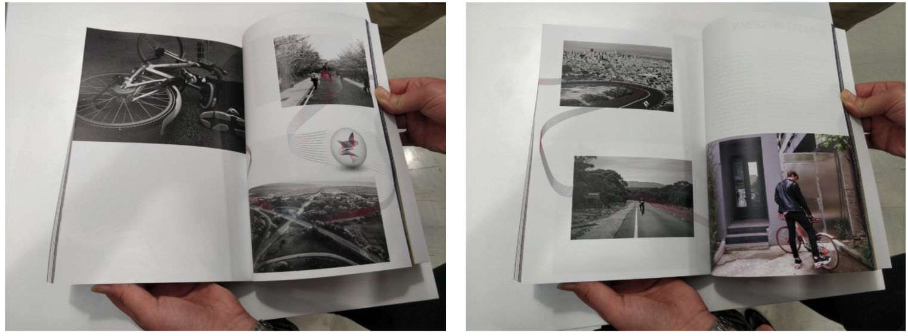
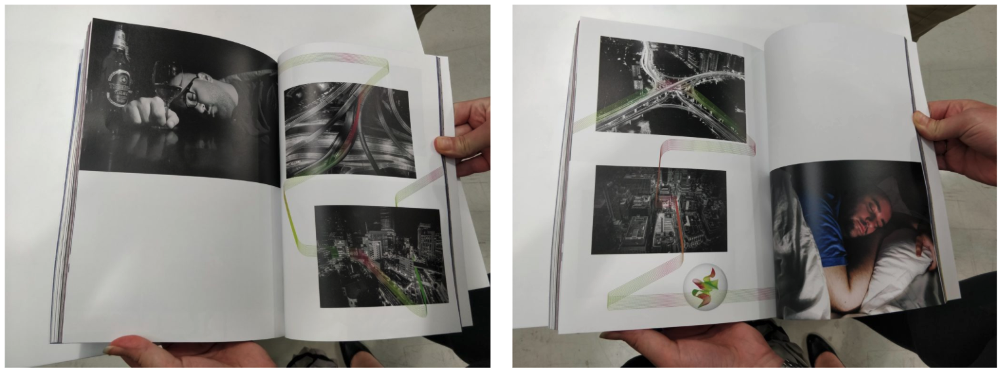

Synuous
WHEN? Spring 2018
WHO? Tomás Cabezón
WHY? Communication Design and Branding Studio
WHERE? 上海 Shanghai

For the Branding course in Tongji University in Shangahi we were asked to develop the brand image of ¨Synuous¨.
Synuous is a fictitious brand whose objective is to deliver the product in a human user centred AI format in the technology of self-driving car: the human learning feature is unique in their product.
Each of the student was ask to design:
– A2 poster
– 16 book pages with our proposed idea


My work for the book:
   